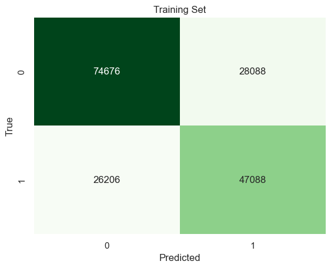
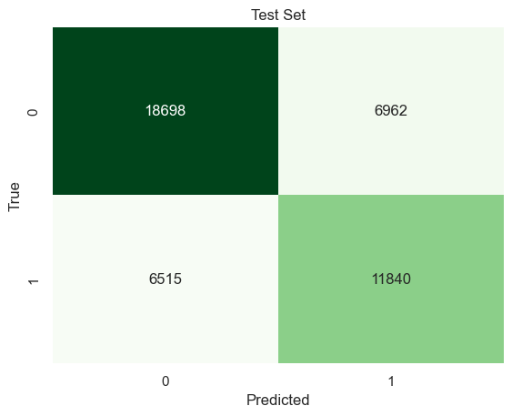
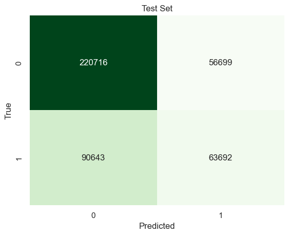
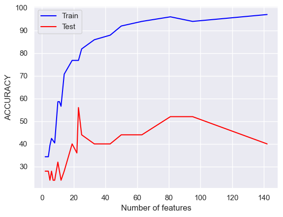
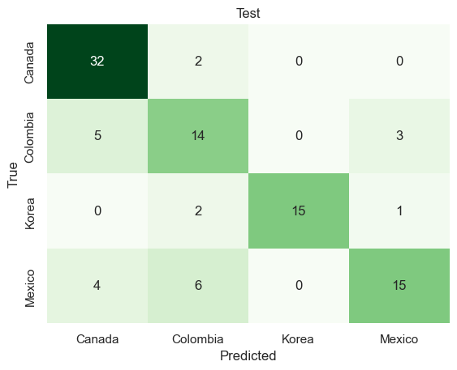
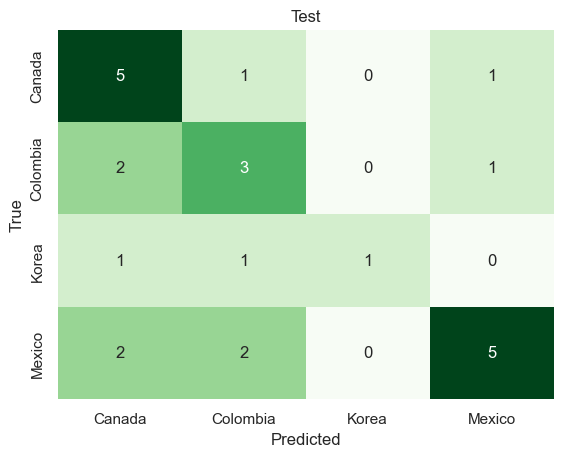

Based on Bayes Theorem, it calculates the conditional probability of class or label to be assigned into a input data. Then it predicts whichever label that has the highest probability as a prediction. Naive Bayes classification is quite simple and powerful thanks to its “naive” assumption of independence between variables. There are many variants of Naive Bayes classification, such as Gaussian, Multinomial, or Categorical. These variants are chosen based on the distribution of variables.
In this section, we are going to Naive Bayes algorithm on two datasets: U.S. Census data and MPI text data. The census data will be split into two for immigrants and native-borns. Feature selection will be applied on both using cross validation. Then Categorical Naive Bayes classification will be used because the features are categories. This will discover which features are important on their success. On MPI text data, there will be a feature selction on vectorized words and the best subset of data will go through Multinomial Naive Bayes classification. This will validates which words are most influencial on each countries immigration report.
As we are using Categorical Naive Bayes classification, POBP columns are removed since it is not categorical variables. Also SCHL and WAGP columns are also removed because they are variables that created SUCCESS label. This leads to have 7 variables in input data, which are AGEP, DECADE, ENG, MAR, RAC1P, SEX, and ESR.
Functions
def train_CNB_model(X, y): # Split the data into training and testing sets using a 80-20 split X_train, X_test, y_train, y_test = train_test_split(X, y, test_size=0.2, random_state=42)# Create and train a Categorical Naive Bayes model model = CategoricalNB().fit(X_train, y_train)# Predict labels for training and testing sets y_train_pred = model.predict(X_train) y_test_pred = model.predict(X_test)# Calculate accuracy scores for training and testing sets train_acc = accuracy_score(y_train, y_train_pred) *100 test_acc = accuracy_score(y_test, y_test_pred) *100return train_acc, test_accdef confusion_plot(y_true, y_pred, title):# Print accuracy, precision, and recall scoresprint("Accuracy:", accuracy_score(y_true, y_pred))print("Precision:", precision_score(y_true, y_pred))print("Recall:", recall_score(y_true, y_pred))# Generate confusion matrix and plot it as a heatmap confusion_matrix = pd.crosstab(y_true, y_pred, rownames=['True'], colnames=['Predicted']) sns.heatmap(confusion_matrix, annot=True, fmt='d', cbar=False, cmap="Greens") plt.title(title) plt.show()
Feature selection
Since we are using only 7 variables, we are going through all combinations of feature and compare the test accuracy. Whichever feature combination has the highest test accuracy is the best subset of features.
Immigrants
train = []test = []num_features = []best_test_acc =0# Iterate through different numbers of features from 1 to the total number of features in the datasetfor l inrange(1, immigrant_X.shape[1] +1):# Generate all possible combinations of features with length 'l'for subset in itertools.combinations(immigrant_X.columns, l):# Train a Categorical Naive Bayes model using the current subset of features train_acc, test_acc = train_CNB_model(immigrant_X.loc[:, list(subset)], immigrant_y)# Store the training and testing accuracy scores and the number of features train.append(train_acc) test.append(test_acc) num_features.append(len(list(subset)))# Update the best test accuracy and the subset of features with the best test accuracyif test_acc > best_test_acc: best_test_acc = test_acc best_subset_immi =list(subset)best_subset_immi # Returns the subset of features that resulted in the highest test accuracy
['ENG', 'MAR', 'RAC1P', 'ESR', 'AGEP']
According to the test accuracy, ENG, MAR, RAC1P, ESR, and AGEP are selected as the best subset on immigrants data.
Train data
Accuracy: 0.6916129911733633
Precision: 0.6263701181228052
Recall: 0.6424536797009305
Test data
Accuracy: 0.6938089287742815
Precision: 0.6297202425273907
Recall: 0.6450558430945247


Using 5 variables ENG, MAR, RAC1P, ESR, and AGEP, the Categorical Naive Bayes Classifier predicts successful immigrants 69% correctly.
Native-borns
x_train, x_test, y_train, y_test = train_test_split(natives_X.loc[:,list(best_subset_nati)], natives_y, test_size=0.2, random_state=42)# INITIALIZE MODEL model = CategoricalNB().fit(x_train,y_train)# LABEL PREDICTIONS FOR TRAINING AND TEST SET y_train_pred = model.predict(x_train)y_test_pred = model.predict(x_test)print("Train data")confusion_plot(y_train, y_train_pred, "Training Set")print("Test data")confusion_plot(y_test, y_test_pred, "Test Set")
Train data
Accuracy: 0.66019821679006
Precision: 0.5291252034144494
Recall: 0.4135605184530983
Test data
Accuracy: 0.6587330631152287
Precision: 0.5290428686529725
Recall: 0.41268668804872516

On Native-borns, the Categorical Naive Bayes Classifier uses all 7 features, but the test accuracy is same as the one on immigrants.
For MPI immigrants report text data, we are using Multinomial Naybe Bayes classification. Each row of text will be vectorized and feature selection will be applied on that vectorized data.
Functions
def vectorize(corpus,MAX_FEATURES): vectorizer=CountVectorizer(max_features=MAX_FEATURES,stop_words="english") # RUN COUNT VECTORIZER ON OUR COURPUS Xs = vectorizer.fit_transform(corpus) X=np.array(Xs.todense())#CONVERT TO ONE-HOT VECTORS (can also be done with binary=true in CountVectorizer) maxs=np.max(X,axis=0)return (np.ceil(X/maxs),vectorizer.vocabulary_)def initialize_arrays():global num_features,train_accuracies,test_accuracies num_features=[] train_accuracies=[] test_accuracies=[]def train_MNB_model(X,y): x_train, x_test, y_train, y_test = train_test_split(X, y, test_size=0.2, random_state=42)# INITIALIZE MODEL model = MultinomialNB().fit(x_train,y_train)# LABEL PREDICTIONS FOR TRAINING AND TEST SET y_train_pred = model.predict(x_train) y_test_pred = model.predict(x_test) train_acc = accuracy_score(y_train,y_train_pred)*100 test_acc = accuracy_score(y_test,y_test_pred)*100return(train_acc,test_acc)
Feature selection
Code
mpi_x,_ = vectorize(list(mpi["text"]),10000)mpi_x = pd.DataFrame(mpi_x)s = mpi_x.sum(axis=0)mpi_x=mpi_x[s.sort_values(ascending=False).index[:]]mpi_x.columns =range(mpi_x.columns.size)mpi_x=mpi_x.to_numpy()mpi_y = np.array(mpi["label"])x_var=np.var(mpi_x,axis=0)# DEFINE GRID OF THRESHOLDS num_thresholds=30thresholds=np.linspace(np.min(x_var),np.max(x_var),num_thresholds)#DOESN"T WORK WELL WITH EDGE VALUES thresholds=thresholds[1:-2];#print(thresholds)# INITIALIZE ARRAYSinitialize_arrays()best_test_acc =0# SEARCH FOR OPTIMAL THRESHOLDfor THRESHOLD in thresholds: feature_selector = VarianceThreshold(threshold=THRESHOLD) xtmp=feature_selector.fit_transform(mpi_x) (acc_train,acc_test)=train_MNB_model(xtmp,mpi_y) num_features.append(xtmp.shape[1]) train_accuracies.append(acc_train) test_accuracies.append(acc_test)if acc_test > best_test_acc: best_test_acc = acc_test best_subset = xtmpplt.plot(num_features,train_accuracies,c="blue",label ="Train")plt.plot(num_features,test_accuracies,c="red",label ="Test")plt.xlabel('Number of features')plt.ylabel('ACCURACY')plt.legend()plt.show()

Code
print("Among 423 words, only", num_features[np.argmax(test_accuracies)], "words are selected based on the test accuracy.")
Among 423 words, only 23 words are selected based on the test accuracy.
Naive Bayes Classification
Code
x_train, x_test, y_train, y_test = train_test_split(best_subset, mpi_y, test_size=0.2, random_state=42)# INITIALIZE MODEL model = MultinomialNB().fit(x_train,y_train)# LABEL PREDICTIONS FOR TRAINING AND TEST SET y_train_pred = model.predict(x_train)y_test_pred = model.predict(x_test)train_acc = accuracy_score(y_train,y_train_pred)*100test_acc = accuracy_score(y_test,y_test_pred)*100print("Traing Accuracy:",train_acc)confusion_matrix = pd.crosstab(y_train,y_train_pred, rownames=['True'], colnames=['Predicted'])sns.heatmap(confusion_matrix, annot=True, fmt='d', cbar =False, cmap ="Greens")plt.title("Test")plt.show()print("Test Accuracy:",test_acc)confusion_matrix = pd.crosstab(y_test,y_test_pred, rownames=['True'], colnames=['Predicted'])sns.heatmap(confusion_matrix, annot=True, fmt='d', cbar =False, cmap ="Greens")plt.title("Test")plt.show()
Traing Accuracy: 76.76767676767676
Test Accuracy: 56.00000000000001


Multinomial Naive Bayes Classification predicts the country labels on test data with 56% accuracy.
Results
US Census data
Regardless of nativity, the Naive Bayes classification doesn’t differ much between training and test dataset. The model got almost 70% accuracy on classifying successful immigrants and 66% accuracy on classifying successful native-borns. Yet there is a difference between two models. Features used on traing the model are different. DECADE and SEX variables are included as a best subset of features for predicting success of native-borns. This implies that the other 5 variables, which are ENG, MAR, RAC1P, ESR, AGEP, have more impact on immigrants predicting their success.
Migration Policy Institute
Classifying the country label using Naive Bayes from the report doesn’t seem very successful having 56% accuracy on test data. In the model, the selected features(words) are 5% of the total number of features. This means that there is not much of differences on the report describing the immigration of those 4 countries based on the 23 words selected.